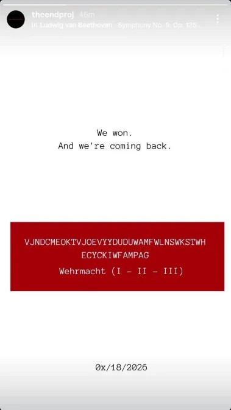

The END Project
In the early months of 2025, a new digital puzzle experience began circulating through Instagram under the name The END Project. Like many modern ARGs, it blended cryptography, visual symbolism, and narrative ambiguity; drawing stylistic parallels to earlier internet mysteries such as Cicada 3301 and SVV, though with no confirmed connection to either.
The project’s earliest artifacts appeared as Instagram posts, each containing layered imagery and encoded text. These posts served as the entry point into a broader network of puzzles, hidden pages, and thematic motifs that collectively formed the project’s fictional universe.
Aesthetic and Narrative Themes
The END Project’s visual and conceptual style draws heavily from several distinct influences:
Usage of machinery imagery and the atmosphere of 19th-century industry.
References to Babbage, the Jacquard loom, Ada Lovelace, and the origins of mechanical logic.
Influence from William Blake and Lord Byron, and symbolic language common to the Romantic era.
Structures and motifs derived from classical compositions.
Puzzle Structure and Hidden Pages
Players who followed the clues from Instagram were led to hidden webpages, locked behind passwords derived from earlier puzzles and clues.
Logic, Semiotics, and Impossible Machines
The END Project frequently employed puzzles, symbols, and riddles across a diverse range of cryptographic methodologies. Throughout the project's evolution, players have encountered multiple layers of encoded challenges, including Caesar ciphers for classical substitution-based obfuscation, Vigenere ciphers for more sophisticated polyalphabetic encryption, and Morse code embedded within visual and textual artifacts. Beyond traditional cryptography, the project has integrated image encryption techniques that hide data within visual media, mathematical riddles that demand logical reasoning, and steganography; the art of concealing information in plain sight. Most notably, the project employs a custom cipher that is continuously evolving, adapting its mechanisms to remain one step ahead of the solving community.

"Urizen — The Architect of Reason". — William Blake.
The Final Instagram Story
On December 17, 2025, the project posted what players interpreted as its final Instagram story. The story reportedly contained the phrase: “We are still here.”

The final transmission: "We are still here."
Shortly after this post, the project’s main website went offline, leaving only its social media presence intact. The Instagram page, YouTube channel, and an associated X account remain visible but inactive.
Six Months of Silence
After December 17, 2025, The END Project went silent. The website remained offline. Instagram, YouTube, and X accounts lay dormant. For approximately six months, the project existed only in the collective memory of its players, archived screenshots, forum discussions, and community theories about what the silence meant.
This dormancy became part of the narrative itself. ARG enthusiasts debated whether the silence represented a true ending, a deliberate pause, or the project's evolution into a new phase. The absence of communication became a message: open, interpretive, and increasingly mysterious.
The Return: June 23, 2026
On June 23, 2026, the silence broke. The END Project posted a new Instagram story containing a clear and direct message:

"We won. And we're coming back."
Embedded within the story was a cryptographic challenge:
VJNDCMEOKTVJOEVYYDUDUWAMFWLNSWKSTW
ECYCKIWFAMPAG
Wehrmacht (I - II - III)
0x/18/2026
The encrypted text, combined with the reference to "Wehrmacht" and a hexadecimal date format, signaled a shift in the puzzle's direction, invoking themes of military history, codes, and cryptographic depth. The presence of Roman numerals (I - II - III) suggested a multi-part structure.
Active Again: A New Phase
Following the June 23 post, The END Project posted with increased frequency. New website infrastructure came online. The project revealed a new mystery that appeared to pick up where the 2025 narrative had left off, maintaining thematic continuity while introducing fresh puzzles and encoded challenges.
Crucially, a functional entry point emerged: The END Society, a platform where players can engage directly with the ongoing mystery, collaborate on solutions, and participate in the unfolding narrative.
The project has transitioned from dormant archive to active, evolving puzzle experience. Players old and new can now join the solving process in real time.
Current Status: Ongoing
As of 2026, The END Project remains active. Its cycle of silence and return mirrors the thematic concerns central to the project itself — renewal, architecture, logic, and the question of endings that are not final. The hiatus, rather than concluding the project, has become an integral part of its narrative arc.
The project continues to draw players interested in cryptography, narrative puzzles, and collaborative mystery-solving. New content appears regularly across its social media channels and primary website.
Solver Voices: Community Interpretations
What is the most comprehensive explanation for what has happened so far?
This remains fundamentally unclear. Theories span a vast spectrum: social engineering, social experiment, university project, cult, indie game developer, government intelligence agencies (CIA, FBI, NSA, MI5), secret society recruitment, corporate recruitment, art project, hackers, aliens, shadow overlords, or simply someone's elaborate entertainment. Each theory has its place, yet none explains it entirely. The ambiguity itself may be intentional — a design choice that resists singular interpretation.
Who are the other characters in this story?
Beyond the historical figures commonly referenced — Jacquard, Ada Lovelace, Byron, Babbage, and others — solvers have identified additional entities: "she who stole the cipher," also called "the time traveller" (possibly responsible for an anomaly or fracture in time). The role of Dr. M. Kavanagh remains unclear. Other recurring figures include "The Keeper," "The Watcher," and "The Architect." The full cast and their relationships continue to elude comprehensive understanding.
What emerges as a compelling narrative?
"A story being told through time, of incredible people who achieved incredible things and laid the foundation for us to build upon. Jacquard and the punch card inspired Babbage to invent the analytical engine. Ada wrote the first program and inspired Alan Turing. Samuel Taylor Coleridge and William Blake laid the foundation for Lord Byron, and Beethoven inspired T.S. Eliot to write the Four Quartets. They are all connected somehow. With the recent focus on the machine, hints of machine learning and probability theory emerge.
This interpretation suggests The END Project is traces how ideas and inspirations flow across centuries, creating an interconnected weave.
How solvers discovered and joined
One solver recalled finding the project in late February 2025 while "mindlessly doomscrolling in bed." The initial encounter was visceral: intrigue, mystery, curiosity, excitement — reminiscent of Cicada 3301. Without prior cryptographic knowledge, they felt drawn to the mystery. They decoded the binary in subsequent posts, identified "the biggest bug," found references to Jacquard in the comments, and eventually discovered The END Project Solvers (TEPS) on Discord. For many, joining meant stepping into an unknown that demanded growth.
Personal transformation through participation
Solvers report significant intellectual and personal growth. In a short span, participants have encountered early computational theory, Romanticism, quantum mechanics, and astrophysics. Beyond knowledge acquisition, the project has functioned as a vehicle for social confidence, motivation, and inspiration. As one solver noted: "Depending on what you choose to focus on, it can be a vehicle for immense growth." The mystery becomes not just a puzzle to solve, but a catalyst for self-development and community connection.
Conclusion: An Evolving Narrative
The END Project represents a unique approach to collaborative storytelling and cryptographic puzzle design. What began in early 2025 as a discrete, time-limited mystery evolved into something more complex: a narrative that incorporated genuine silence and dormancy as deliberate structural elements.
The project's return in June 2026 demonstrates that even ARGs can resurrect, iterate, and deepen over time. Rather than concluding, The END Project has entered a new chapter — one where players can actively participate in real-time solving and discovery.
Whether viewed as an art project, a puzzle game, or a modern mystery, The END Project continues to exemplify how digital culture can blend aesthetics, cryptography, narrative, and community participation into a single, evolving artifact.